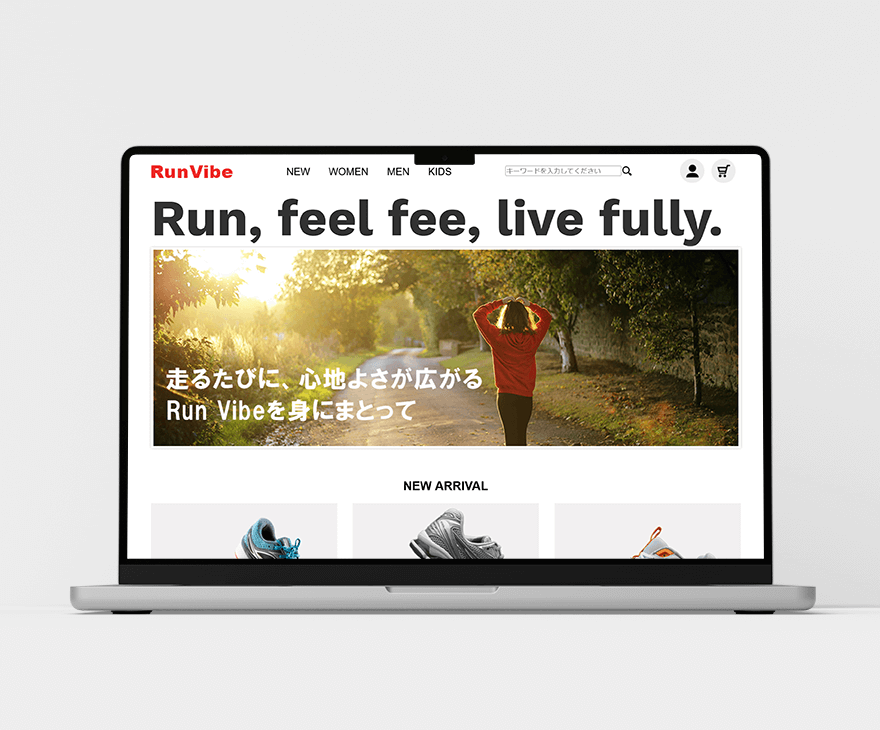

WORK
ランニングシューズ
オンラインサイト
"魅力的なオンライン体験で購買意欲を高めるサイト設計"

設計ポイント
導線設計
- 1. Instagram・YouTubeで商品を知る
- 2. 公式サイトへアクセス
- 3. 商品ページや商品詳細ページへアクセス
- 4. 検索機能・お気に入り機能・レビューにより購入を検討
- 5. 購入へ自然に進める流れを設計
UI設計
- o ホバーやアニメーションで操作感を補助
- o 星評価・レビュー投稿エリアをUIとして設計（保存/投稿機能は未実装）
- o 商品を「使っている姿」が想像できる写真設計（Instagram連携前提）
コンテンツ設計
- o マラソン大会情報など、「靴を使う目的」を提供
- o 初回限定クーポン × 会員登録で購買への動機づけ
- o レビュー・お気に入りで再訪・比較のしやすさ向上
デザインの工夫
- 配色
- ホワイト＋オレンジ系で、軽快さと信頼感を両立
- フォント
- サンセリフ体を採用し、視認性とモダンさを意識
- ビジュアル設計
- ファーストビューに感情を動かす写真を配置
- 動きのあるUI
- マウスオーバーで操作可能箇所をわかりやすく演出